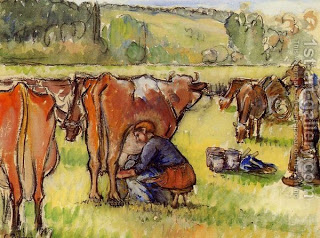

Bava Metzia 96 - Borrower’s Exemption from Liability
When a man borrows a cow and it breaks a limb or dies " ...if its owner is with him, he shall not pay ."
Does the owner have to be "with him" at the time of borrowing, or at the time of the accident, or both? Since it says, "… if its owner is not with him, he shall surely pay ", the owner being with him at one point of time is sufficient, but which point in time?
Is it at the time of the borrowing when the cow comes under his control, or at the time of the accident, when he becomes obligated? - It is the time of borrowing, because then he becomes responsible for its sustenance.
And "with him" means either works for him or serves him.